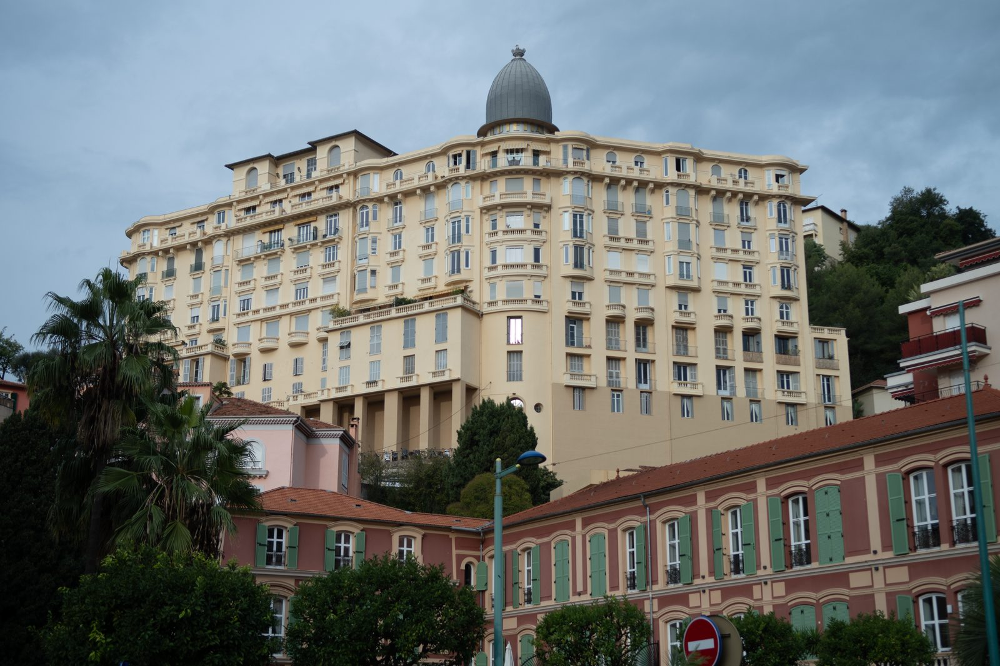
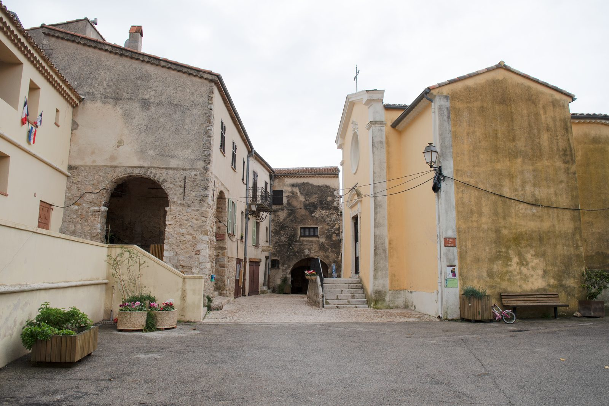
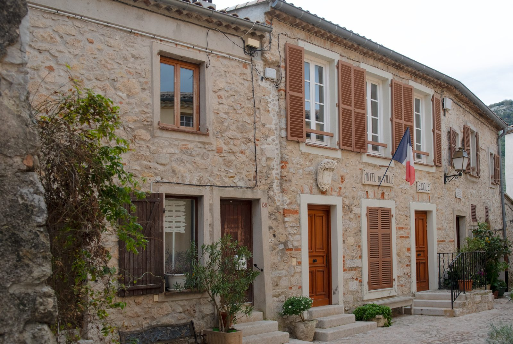

Monaco Made Easy · Guide per i visitatori
Mentone e i borghi in collina
Mentone è in Francia, l’ultima città della costa prima dell’Italia, senza controlli al confine da Monaco. Ha un centro storico colorato che sale dal porto, lunghe spiagge, giardini famosi e borghi medievali sulle montagne alle spalle.
Come arrivare da Monaco
I treni dalla stazione di Monaco Monte-Carlo arrivano a Mentone in circa 10 minuti. La fermata successiva, Menton-Garavan, è più vicina alla parte est del centro storico, al porto e al confine italiano. Anche l’autobus 600 della costa collega Monaco a Mentone, più lentamente.
I taxi di Mentone sono taxi francesi. Possono portarti a Monaco, ma i taxi monegaschi non possono prenderti a Mentone, né quelli di Mentone a Monaco. I posteggi principali sono davanti alla stazione di Mentone, vicino al Casinò e al municipio.
Il centro storico e la basilica
Vicoli colorati e scalinate salgono dal porto fino alla barocca Basilica di Saint-Michel-Archange, con vista sul mare. È bellissimo, ma ripido e con gradini, quindi non adatto a sedie a rotelle e passeggini.


Continua a salire sopra la basilica fino al Cimitero del Vieux-Château, dove sorgeva il vecchio castello. Le sue grandi tombe ottocentesche appartengono ai villeggianti invernali britannici, russi e di altri paesi che resero famosa Mentone, tra cui William Webb Ellis, a cui si attribuisce l’invenzione del rugby. Da qui si gode anche la vista più bella sulla città: la foto in cima a questa pagina è stata scattata qui. È ancora in uso, quindi si prega di essere silenziosi e rispettosi.

In città si vedono ancora i grandi alberghi costruiti per quei villeggianti invernali. Il Winter Palace in avenue Riviera, costruito nel 1901 con 220 camere, è diventato appartamenti privati negli anni Cinquanta ed è oggi monumento storico: si ammira dalla strada.


Musei e giardini
- Museo Jean Cocteau, collezione Séverin Wunderman: lo straordinario edificio bianco di Rudy Ricciotti sul lungomare è chiuso dalla tempesta del 2018. Parte della collezione è esposta alla Galerie des Musées, nel Palais de l’Europe, vicino ai giardini Biovès.
- Museo Jean Cocteau, Le Bastion: il piccolo museo voluto da Cocteau, in un forte del Seicento sul porto.
- Palais Carnolès: l’ex residenza estiva dei principi di Monaco, oggi museo d’arte con un giardino di agrumi.
- I giardini Biovès in centro e il giardino botanico del Val Rahmeh a Garavan, pieno di piante tropicali.


Les Halles, il mercato coperto
Il mercato coperto di Mentone occupa una colorata sala Belle Époque ai piedi del centro storico, a due passi dalla spiaggia. Vieni al mattino per formaggi, olive, salumi e i famosi limoni della città.


La Festa del Limone
Ogni febbraio la Fête du Citron riempie i giardini Biovès di sculture giganti fatte di limoni e arance. Nel 2027 si svolge dal 13 al 28 febbraio, con le sfilate dei carri sulla Promenade du Soleil la domenica pomeriggio (14, 21 e 28 febbraio). I treni per Mentone sono molto affollati nei giorni delle sfilate.
Mirazur
Il ristorante di Mauro Colagreco, al confine italiano, ha tre stelle Michelin. Prenota con largo anticipo.
I borghi sopra Mentone
Gli autobus Zest di Mentone partono dalla stazione degli autobus accanto alla stazione ferroviaria: linea 10 per Sainte-Agnès, uno dei borghi costieri più alti d’Europa, a circa 780 m (circa 35 minuti), linea 5 per Gorbio e linea 6 per Castellar (circa 30-35 minuti ciascuno). Passano poche volte al giorno, quindi controlla gli orari prima di partire.


Nell’app trovi la mappa di Mentone, i percorsi a piedi, hotel, ristoranti, bagni, farmacie e bancomat, e i borghi con come arrivarci.